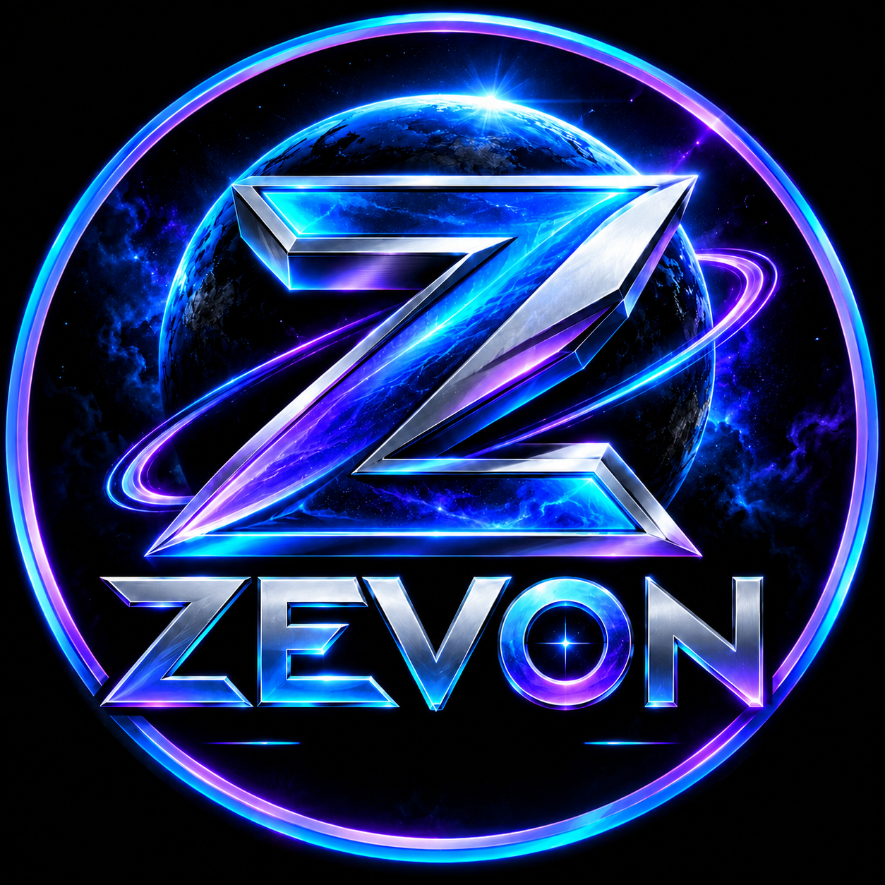

ZEVON
Autonomous Intelligence, Evolved.
Launch settings
Bonding curve: AUTON reference configuration. Exact on-chain transaction equivalence is not yet independently validated.
Phantom wallet
Expected creator wallet:
47jKwD5fkDcspPFoiRWN5SUrLjA3zw2THZV95Qu48Pto
Not connected. On iPhone, open this site inside Phantom's in-app browser.
Asset verification
Not checked.
AUTON on-chain reference
Read-only check of the source Meteora DBC configuration. No Phantom signature or SOL required.
Not inspected. A valid account does not prove all launch parameters match.
AUTON curve audit (V3)
Reads the source account using the RPC above, verifies the recorded SHA-256, and extracts selected integer fields at known offsets. This is not a full SDK schema decode.
Not audited.
Deployment is locked
Live transaction signing is intentionally disabled. The AUTON pool-fee parameters, SDK transaction arguments, and simulated first-buy result must be verified before enabling Create Config and Create Pool + First Buy.
Never enter a seed phrase or private key into this site. No wallet transactions are requested by this page.